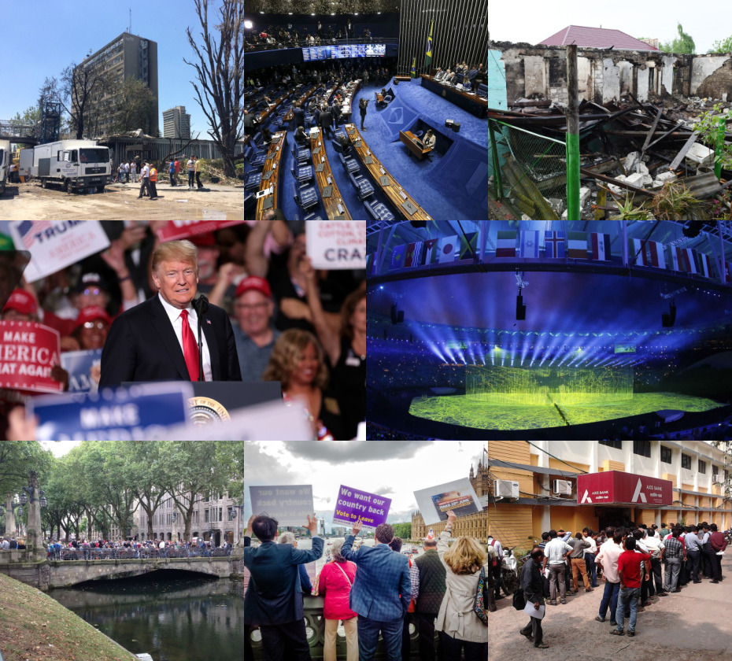

Economic Decisions
Several countries experimented with policy changes that directly affected everyday life, banking systems, and financial behaviour.
2016 was a year of big global changes, with major political and economic decisions creating uncertainty worldwide. Important economic moves, like policy shifts and reforms, impacted markets and everyday life. Digitally, smartphones, social media, online payments, and digital platforms grew rapidly. Overall, 2016 marked a transition toward a more connected and digitally driven world.
Several countries experimented with policy changes that directly affected everyday life, banking systems, and financial behaviour.
Mobile phones, apps, and online platforms became the primary way people consumed information and services.
Internet culture influenced language, humour, and how news spread, often faster than traditional media.